| oracle.com |
All Multithreading Terms
|
thread |
| stackoverflow.com securecoding.cert.org stackoverflow.com stackoverflow.com | Intrinsic Locking, Extrinsic Locking (Client side Locking) 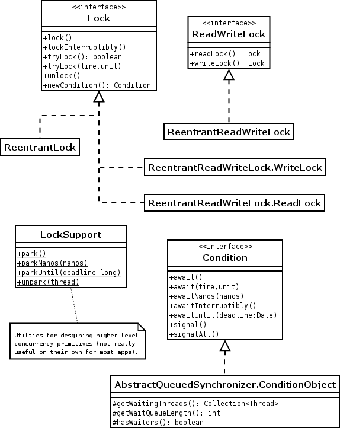 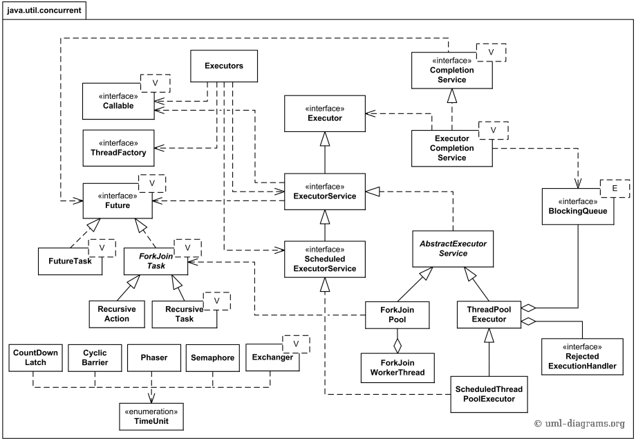 Avoid Client side Locking: Calling class, will be affected, if any change in locking of class it used | thread |
| stackoverflow.com stackoverflow.com github.com | All synchronized methods of a class use same Lock, which reduces throughput Always avoid synchronized(this) and replace it with a lock on a private reference | thread |
| e-zest.net stackoverflow.com |
Using Object as a Mutex (Java Monitor Pattern)
Useful to implement more than one Mutexes in your code
|
thread |
| stackoverflow.com | Green and Native threads in Java | thread |
| jenkov.com jenkov.com github.com github.com | Java CountDownLatch/CyclicBarrier example 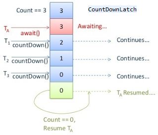 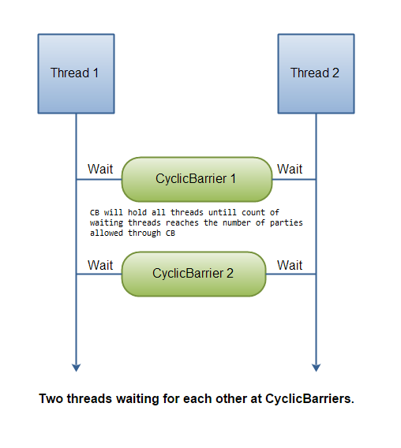 | thread |
| dzone.com github.com github.com | Java Semaphore/Lock/Condition example 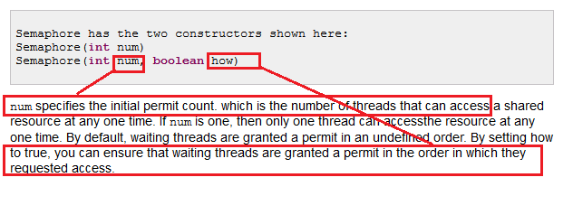 | thread |
| jenkov.com github.com | Exchanger example 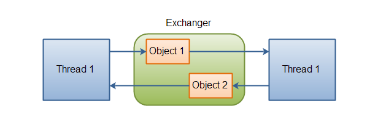 Exchanger a kind of rendezvous point where two threads can exchange objects | thread |
| narmnevis.com ibm.com | Java threads using JNI 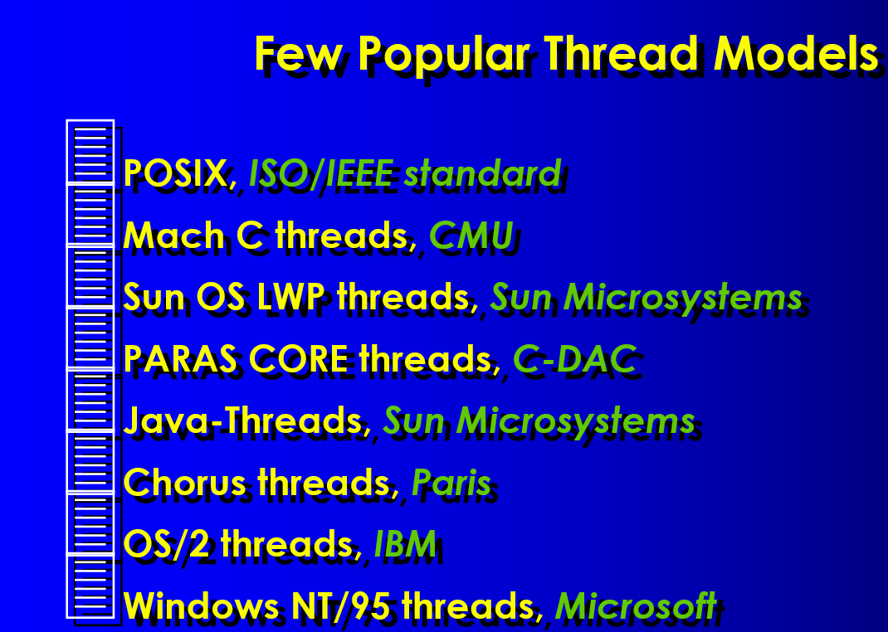 | thread |
| stackoverflow.com dynatrace.com jenkov.com | ThreadLocal and memory leaks 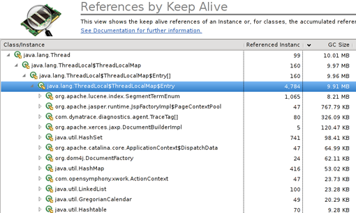 | thread |
| wikipedia.org wikipedia.org wikipedia.org wikipedia.org wikipedia.org | Fiber's Co-Operative Multitasking/Thread's Pre-Emptive Multitasking Co-Routines/AddressSpace/Thread-local/Thread Models | thread |
| howtodoinjava.com javacodegeeks.com dzone.com |
Compare and Swap (CAS) Algorithm Optimistic and Pessimistic Locking Synchronization is coordinated access to mutable state of an object AtomicLong performance implications 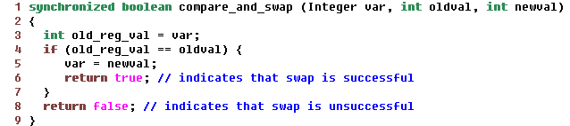 |
thread |
| stackoverflow.com | Reentrant locking mechanism | thread |
| stackoverflow.com | Java synchronized keyword on .class | thread |
| stackoverflow.com stackoverflow.com |
Race condition/Unlucky timing owing to compound actions
Compound Actions: (RPC)
|
thread |
| stackoverflow.com oracle.com stackoverflow.com github.com |
ConcurrentHashMap uses Lock Stripping
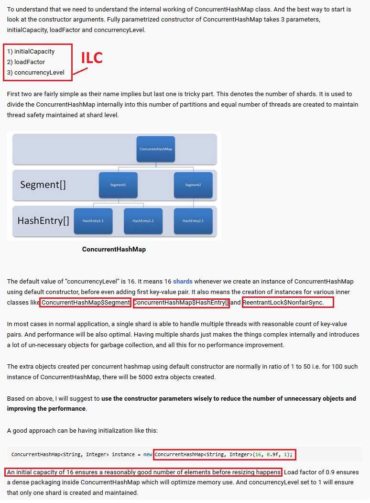
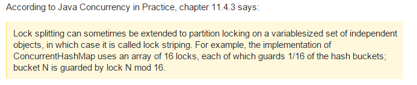
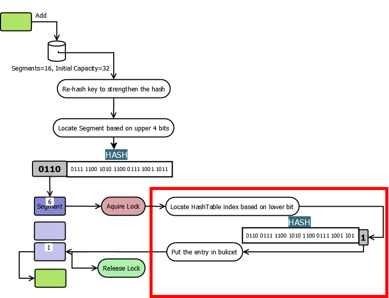
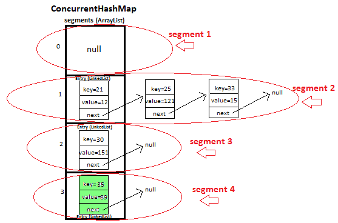
|
thread |
| dzone.com github.com |
HashMap performance improvements in JDK 8
|
thread |
| gee.cs.oswego.edu | Using JDK 9 Memory Order Modes : Doug Lea | thread |
| javapractices.com | Collection of Best Java Practices | lang |
| javapractices.com | Collection of Best Java Practices | lang |
| oracle.com | JDK8 docs 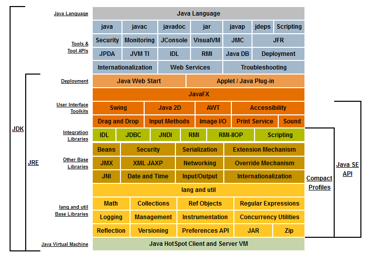 | lang |
| stackoverflow.com stackoverflow.com | Reflection and MethodHandler comparision | lang |
| stackoverflow.com github.com | Diamond Operator in JDK 7/8 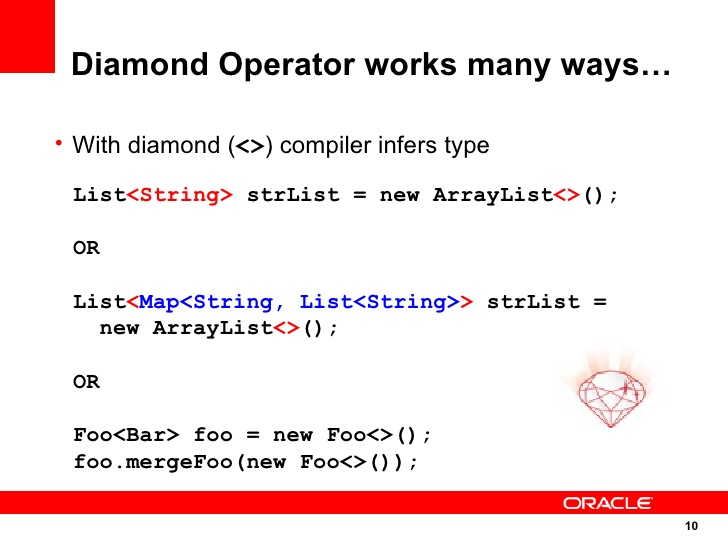 | lang |
| 360doc.com | Keyword 'final' 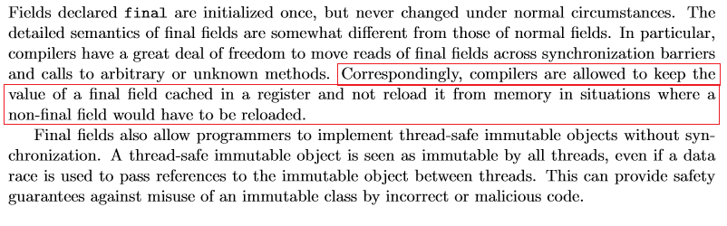 | lang |
| winterbe.com | JDK 8 Nashorn | lang |
| oracle.com | JDK 5 varargs (String... args) | lang |
| github.com github.com | JDK 8 static and default methods in Interface | lang |
| ibm.com umd.edu | Java Memory Model(JMM) and threads specification revision JSR-133 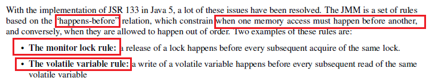 | lang |
| stackoverflow.com | How static is different from volatile in Java example | lang |
| stackoverflow.com | How hashCode works | lang |
| securecoding.org | Oracle Coding Standard for Java | lang |
| stackoverflow.com | Purpose of package-info.java 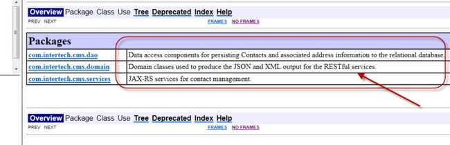 | lang |
| stackoverflow.com | System.arraycopy is efficient owing to JIT optimization | lang |
| javarepl.com javaworld.com | Read-Eval-Print-Loop (REPL) for Java | lang |
| github.com dzone.com | Java String/PermGen/Metaspace | lang |
| pawlan.com programcreek.com concretepage.com stackoverflow.com | Java Reference Objects: Soft, Weak, Phantom Example of Guava MapMaker and WeakHashMap | lang |
| idrsolutions.com | jlink explained in 5 minutes | lang |
| stackoverflow.com stackoverflow.com java.net | System.arraycopy is native and uses 'memcpy/memmove' Native source code of arraycopy | lang |
| oracle.com | Reactive Programming with JDK 9 Flow API (Reactive Streams) | lang |
| youtube.com winterbe.com oracle.com drdobbs.com github.com | Java 8 Lambda JSR-335 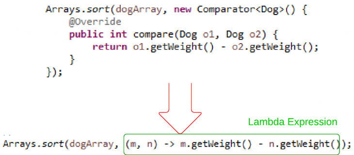 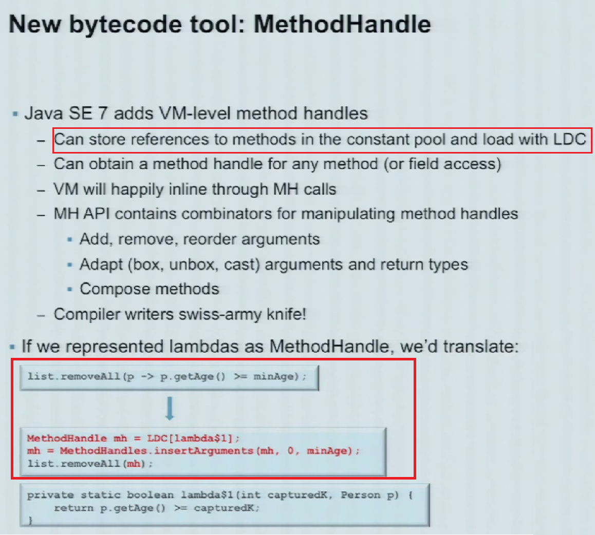 An expression with parameter variables has been called a Lambda JVM instruction set for Lambdas | lambda |
| java.net youtube.com | Translation of Lambda Expressions (Brian Goetz) using DeSugaring Comparision of Lambdas/Reflection/MethodHandle | lambda |
| vasinov.com | Functional programming in Java | lambda |
| oracle.com | JDK 8 all functional interfaces It provides target types for lambda expressions and method references | lambda |
| stackoverflow.com | JDK 8 double colon (::) operator | lambda |
| stackoverflow.com | JDK 7 underscore in numeric literals(int num = 999_333) | lambda |
| stackoverflow.com | Difference between a closure and lambda | lambda |
| github.com | Usage of Predicate in JDK 8 Streaming 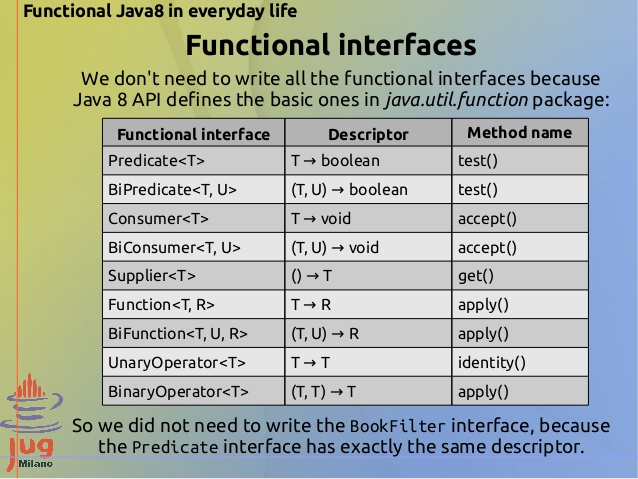 | lambda |
| winterbe.com oracle.com | JDK 8 Streaming | stream |
| drdobbs.com | Purpose of Eager and Lazy operations in JDK 8 Streaming 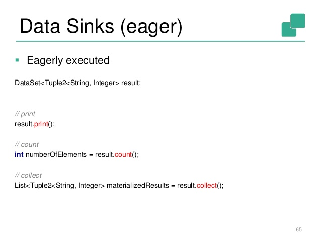 | stream |
| javapapers.com stackoverflow.com javamadeeasy.com | ConcurrentSkipListSet/ConcurrentSkipListMap in Java 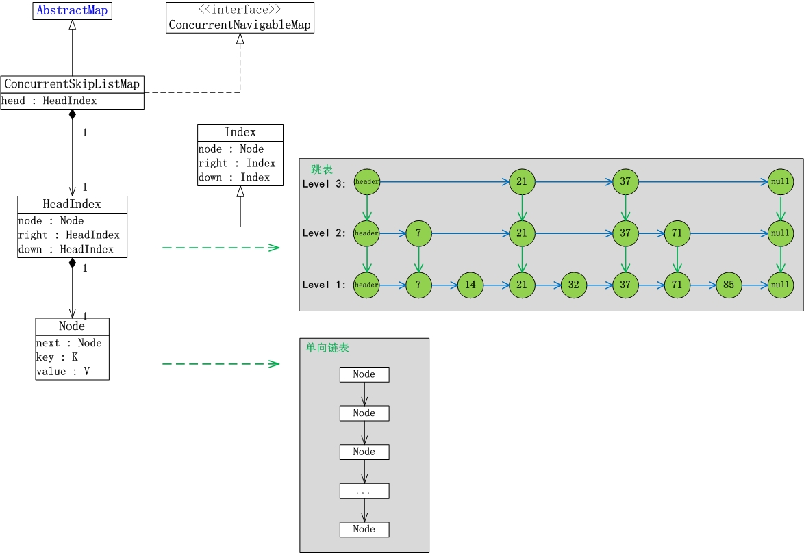 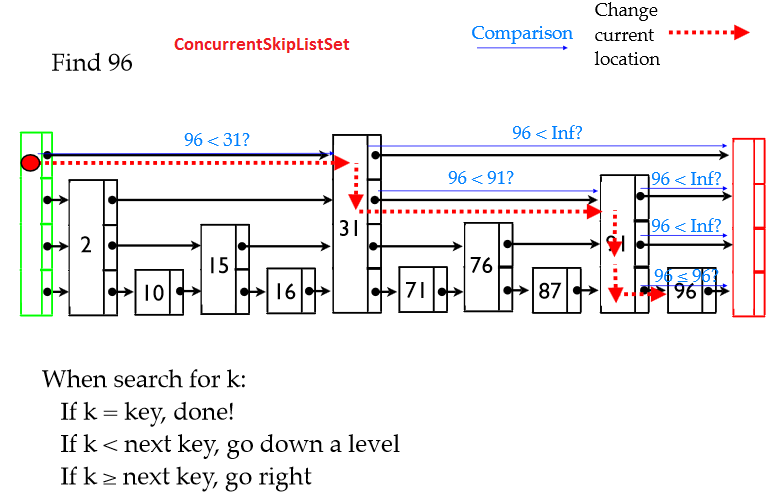 These Java classes are based on Skip List | utils |
| jenkov.com crunchify.com |
Blocking Queue (Default methods: Put and Take) in Java 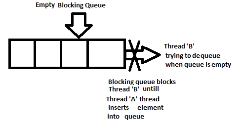
|
utils |
| stackoverflow.com journaldev.com github.com | Class CopyOnWriteArrayList (COWAL) 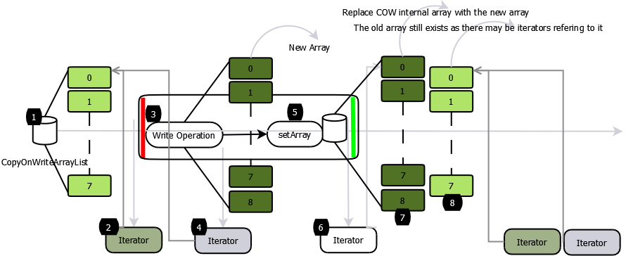 Copy underlying Array with every Mutation Operation(add/set) | utils |
| stackoverflow.com | Why is ArrayDeque better than LinkedList | utils |
| oracle.com | Java collection hierarchy |
utils |
| stackoverflow.com | Lower(super) and Upper(extends) bound Generics: (PECS: Producer Extends, Consumer Super) | library |
| oracle.com | Example of Java ANTLR: generate interpreter for any language | library |
| json-b.net | Java API for JSON Binding : JSR 367 | library |
| dzone.com | DZone scalability/microservices articles | dzone |
| dzone.com | DZone functional programming articles | dzone |